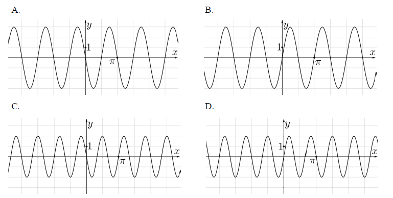

Jesteś tutaj: Matura
rozszerzona - kurs - część 18 - zadania
Matura rozszerzona - kurs - część 18 - zadania
Cały kurs na: ./matematyka-matura-rozszerzona-kurs.html.
Dane są funkcje \(f(k)=k^3\) oraz \(g(k)=2\cdot f(k)-f(k-2)\), gdzie \(k\in
\mathbb{R} \). Wyznacz wartości \(k\), dla których \(g(k)=80\).
\(k=2\sqrt{3} \lor k=-2\sqrt{3} \lor k=-6\)
Funkcja \(f\), której dziedziną jest zbiór wszystkich liczb rzeczywistych, jest
określona wzorem \(f(x)=2\sin (-3x)\). Na którym rysunku przedstawiono fragment wykresu funkcji
\(f\)? 
C
Dla danej funkcji kwadratowej \(f\) określono funkcje \(g\) i \(h\) wzorami:
\(g(x)=k\cdot f(x)\) oraz \(h(x)=f(kx)\), gdzie \(k\ne 0\). Wyznacz wzór funkcji \(f(x)\), mając
dane wykresy funkcji \(g\) i \(h\).
\(f(x)=2x^2-2x-12\)
Na którym z poniższych rysunków jest przedstawiony fragment wykresu funkcji \(f\)
określonej dla każdej liczby rzeczywistej \(x\) wzorem \(f(x)=\sin \left(\frac{2}{3}x\right)\)?
B
Dana jest funkcja \(f(x)=\cos x\) oraz funkcja \(g(x)=f\left(\frac{1}{2}x\right)\).
Rozwiąż graficznie i algebraicznie równanie \(f(x)=g(x)\). 
\(x=\frac{4}{3}k\pi \land k\in \mathbb{Z} \)
Na rysunku przedstawiono fragment wykresu funkcji homograficznej \(y=f(x)\), której
dziedziną jest zbiór \(D=(-\infty ,3)\cup (3,+\infty )\).  Równanie \(|f(x)|=p\) z niewiadomą \(x\) ma dokładnie jedno
rozwiązanie
Równanie \(|f(x)|=p\) z niewiadomą \(x\) ma dokładnie jedno
rozwiązanie
Równanie \(|f(x)|=p\) z niewiadomą \(x\) ma dokładnie jedno
rozwiązanie A.w dwóch przypadkach: \(p=0\) lub \(p=3\).
B.w dwóch przypadkach: \(p=0\) lub \(p=2\).
C.tylko wtedy, gdy \(p=3\).
D.tylko wtedy, gdy \(p=2\).
B